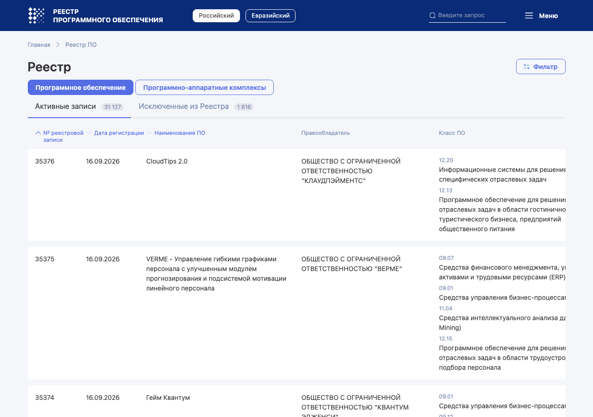

Единый реестр российских программ для ЭВМ и баз данных ведёт Минцифры на основании ст. 12.1 закона 149-ФЗ. Порядок включения установлен постановлением Правительства от 16.11.2015 № 1236. Программа из реестра признаётся происходящей из Российской Федерации (ч. 7 ст. 12.1).

Реестр публичный. По нему заказчик проверяет, что поставщик действительно продаёт российское ПО, а налоговая — что льгота по НДС применяется к программе из реестра.
Правительство вправе устанавливать дополнительные требования (ч. 6 ст. 12.1); они записаны в постановлении № 1236 и меняются чаще закона. С 1 марта 2026 года действует новая редакция правил реестра: соответствие требованиям проверяется ежегодно, а для отдельных классов ПО поэтапно вводятся требования совместимости с российскими программами.
| Преимущество | Основание | Для кого значимо |
|---|---|---|
| Освобождение от НДС при передаче прав, в том числе удалённом доступе | пп. 26 п. 2 ст. 149 НК | Любой платный сервис, у которого клиенты — компании |
| Допуск к государственным и муниципальным закупкам ПО | национальный режим в закупках, ПП № 1875 от 23.12.2024 | Сервисы для школ, больниц, ведомств |
| Продажи владельцам значимых объектов КИИ | Указ Президента от 30.03.2022 № 166: с 1 января 2025 года иностранное ПО на таких объектах запрещено | Сервисы для банков, энергетики, связи, транспорта |
| Признак для ИТ-аккредитации и грантов | условия Минцифры и фондов поддержки | Компании, которые получают льготы и субсидии |
Для небольшого сервиса с клиентами-физлицами реестр обычно не нужен: НДС он и так не платит на УСН при доходе до 20 млн ₽, а в закупках не участвует. Реестр становится выгодным, когда клиенты — компании и госзаказчики.
Программу исключают, если перестало выполняться любое из требований: сменился контроль над правообладателем, выросли выплаты иностранцам, программа перестала продаваться. Исключение влечёт утрату льготы по НДС с даты исключения и проблемы с заказчиками, которые купили программу как российскую.
Решение об отказе во включении можно обжаловать в суд в течение трёх месяцев со дня получения (ч. 10 ст. 12.1).
149-ФЗ ст. 12.1ПП № 1236reestr.digital.gov.ruновые правила — с 01.03.2026исключительное право — у россиянконтроль > 50 % у граждан РФвыплаты иностранцам < 30 %оборот в РФбез НДС (пп. 26 п. 2 ст. 149 НК)госзакупкизаказчики с КИИ